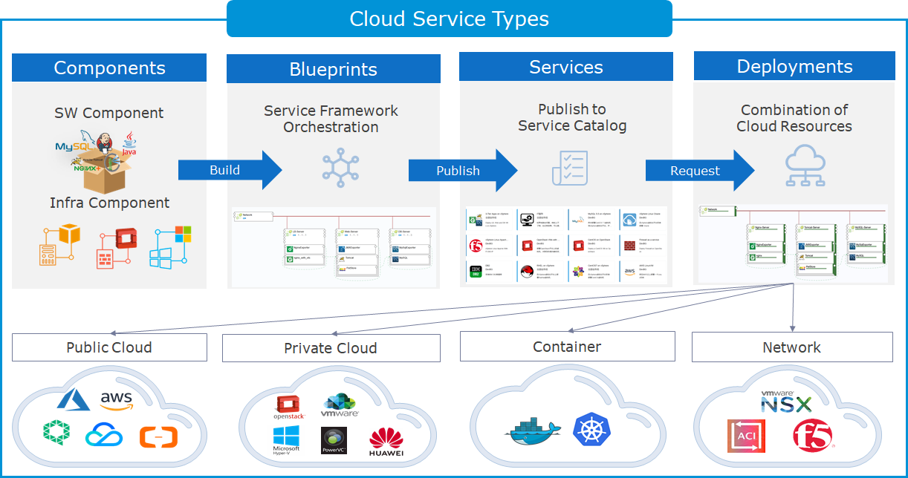

Service Model
In SmartCMP, there are two types of services:
Cloud Resource Blueprint Service: Refers to the request and automatic deployment of each cloud platform resource. These services can be infrastructure services (such as virtual machines, firewalls, DNS, etc.), application services (such as databases, or integrated applications including network load balancing, Web components, and databases), etc.
Manual Request Service: Services that are not standardized and require manual intervention and support, including service requests, event handling, and so on. For example, if the user forgets the password which needs to be reset or submits a request to open an email or account or encounters an IT service problem which needs to be resolved (the server, printer or network cannot be accessed, etc.). The user can initiate a work order request service through the service catalog, and the service team will receive the request and process.
The following diagram depicts the logical connections between components, blueprints, services, and deployments. Components include software components and infrastructure components. Software architect builds the topology map of the application and configures resources and parameters for the service, publishing the service card to the service catalog. Members of the business group apply for self-service in the service catalog according to actual needs, and the services are automatically combined according to policies and specifications to complete automated deployment and delivery.

1. Component
Any resource is a component object. Whether it is software, infrastructure or container resources, different types of cloud resources are component objects and can be componentized. The definition of components adopts an object-oriented design method, uses a unified data structure for modeling, and standardizes configuration properties. SmartCMP provides not only built-in rich component resources and common operations, but also highly scalable capabilities, flexibly add component resources and configure operations according to user needs.
Rich component library: component resources out of the box. SmartCMP cloud management platform has a large number of commonly used component resources built in, including IaaS (cloud hosts, networks, storage, etc. of different cloud platforms), PaaS (servers, databases, RDS, etc.), containers (Kubernetes, Docker), software (MySQL, Oracle, Nginx, etc.) and agents (monitoring agents, automation agents). Different types of resources are created and managed in a unified interface, using a tree-like grouping directory, supporting custom component grouping, supporting secondary editing, fast copying, Import and export components.
「Note」Detailed creation and management steps please refer to: component library
Custom components: Users can create reusable components according to their needs, componentize any resource, and standardize the process of configuring components, including defining resource types, versions, attributes, component operations, etc., and all configuration interfaces are open to user customization. For example, when a DBA creates a database cluster and an Oracle database needs to be deployed, DBA can add Oracle components to the component library and configure components according to requirements, including configuring component profiles, instructions, properties, scripts, and operations (create, start, stop, restart, delete, etc. the specified database)
「Note」 For detailed steps of the custom component, please refer to: Creating a component
1.1. Component builds up blueprint
A component is the basic unit that makes up a blueprint. The components in SmartCMP consist of two types:
Infrastructure components: including computing components (e.g., virtual machines, containers, etc.), network components (e.g., load balancing, security groups, firewalls, etc.), storage components (e.g., disks, object storage, etc.). These components are built into SmartCMP and can be selected during blueprint design.
Software components: for the installation of application software, including middleware, relational databases, non-relational databases, and so on. You can standardize configuration properties and use scripts to specify how to install, configure, uninstall, or update components during software deployment (you can also customize the other operations you need). Software architects can create custom components, update existing components, or delete components that have been removed through the software component management interface. Software components can be used with infrastructure components when designing blueprints.
「Note」SmartCMP has a large number of commonly used components built in. When you add custom infrastructure components or software components, you can choose to instantiate them when you add them so that you can also choose them during blueprint design.
1.2. Object-oriented design
The design of components adopts the structure of object-oriented design. Object-oriented has three characteristics of encapsulation, inheritance and polymorphism. Inheritance allows child categories to have various properties and methods of the parent category without the need to write the same code again. While making the child category inherit the parent category, you can redefine certain properties and rewrite certain methods, that is, to override the original properties and methods of the parent category, so that it has different functions from the parent category.
- Operations and attributes are inheritable. Start, stop, restart, delete, and refresh the built-in components of the system. (Take the refresh operation as an example, the operation is configured in system in advance, and the implementation methods, scripts, tasks, and parameters necessary for the operation are used.) The built-in operation can be applied to any resource on the platform. Therefore, when the component Oracle is created, the built-in "start, stop, restart, delete, refresh" operations are automatically inherited. When the component type Software is selected, the created Oracle component has various attributes of the parent Software component and can also be customized to obtain different functions from the parent one. It should be noted that the attribute key value added by the user and the attribute key value in the parent component cannot be the same, otherwise the attribute definition in the parent component will be overwritten. You can also add a script file by creating a new file, which will be used to extend the component. For example: the custom component Oracle's install.sh script will be associated with the "create operation".
- Encapsulation hides the implementation details of complex operations and only provides public access to the outside world. The platform has complex operations built-in and works out of the box, reducing differences and difficulty in understanding. For example: "adjust virtual machine configuration" operation (adjust virtual machine calculation specifications and cloud platform specifications), when the cloud platform type is different, the SmartCMP cloud management platform hides the details of the flow of resource operations, only exposing public access interfaces. For example, the "Adjust virtual machine configuration" operation is applied to a virtual machine on the Hyper-V platform and a virtual machine on the OpenStack platform. The specific technical implementation is different, but the user configuration interface displays the same content.
- Polymorphism refers to the same operation, which has a different effect due to different parameters passed in. For example, when the component Oracle is created, different application systems have specific requirements and custom requirements for Oracle's deployment requirements and parameter control. "Attributes" can be set according to the deployment requirements of different systems, by setting custom attributes, exposing configuration parameters that application components need to fill out to the interface configuration, and passing custom parameters. When Oracle is deployed automatically, the SmartCMP cloud management platform automatically invokes relevant parameters to perform application installation and configuration, which meets different requirements for Oracle deployment in different data clusters.
2. Blueprint
A blueprint is a complete specification of the overall application, including computing, storage, networking, software, etc., used to determine attributes and dependencies, workflows, and execution strategies for various resources. You can create a standardized service framework by designing blueprint on visualized canvas and combining one or more components. Once the blueprint is published, it can be used to create a service.
Blueprints can take many forms, for example, a blueprint may contain:
A network component and a virtual machine component
A firewall component or a public cloud relational database component
Multi-level application architecture, such as: network load balancing, web applications and databases
A hybrid orchestration of multiple cloud platform components, such as a web application deployed in Aliyun while a database in a vSphere private cloud, or a web application in a Kubernetes container while a database in an OpenStack private cloud.
3. Workflow
Workflow defines the sequence and strategy of activities or tasks performed at each step in the automated process.
Workflows in SmartCMP are divided into the following three types. Each type includes a built-in process that can be used directly. These built-in processes cannot be modified or deleted. You can also customize the workflows you need through a visual process designer.
Cloud Resource Blueprint Service: Defines the process of automated deployment of cloud resources, including built-in workflows for standard cloud service deployment.
Manual Request Service: Defines the task and flow mode of each step of the request service, including built-in workflows such as standard manual requests and standard event management.
Approval process: It is used to control whether a user should obtain approval of someone in the organization when applying for service or performing operations on a cloud resource.
Please remind that in those versions before 5.1 or those upgraded from the old version, the approval process configuration menu is provided for compatibility with the approval process in the old version. However, this feature will be turned off in the future, and it is recommended that you use workflow to create and manage the approval process.
4. Form
When a user requests a service in the service catalog, each service you create and publish displays a form. When creating or configuring each service, you can use the default form. If you need to modify or add additional field information for users to fill in at the time of request, you can customize the form through the form designer.
5. Catalog Group
Catalog groups are used to organize different services into related types, making it easier for users to browse the services they need. For example: infrastructure services, database services, manual request services, and more. You can create new groups as needed to categorize the services you need to publish.
6. Service Publishing
Tenant administrators or infrastructure administrators can deploy blueprints and workflows that have been released, according to different organizational or departmental requirements, and publish them as services in the service catalog. A service can be published to a business group so that only members of the business group can apply while it can also be posted to all business groups and shared with all members for request.
In the process of service configuration:
For cloud resource deployment services, you can specify a complete specification of the deployment, such as virtual machine configuration (required virtual machine template, computing size, disk configuration, etc.), lease, operation entitlement, approval process, service workflow, customization forms, etc.
For request services, you can specify the service team, approval process, service workflow, custom form, and more for each step of the task.
6.1. Lease Period
Lease period includes the lease time, retention time and recycle bin recovery time:
When the lease time expires, all computing resources in the service deployment will be shut down;
When the retention time expires, the service deployment will be placed in the recycle bin;
In the Recycle Bin, you can restore or manually delete them (the resources will be completely released from the cloud platform). If you do nothing, the resources will be automatically deleted after the reclaim time expires (these resources will be completely released from the cloud platform).
6.2. Approval Process
Approval process can be set up separately in business group and service configuration:
Approval process configured by the business group will take effect for all services in the business group;
If a service is configured with an approval process separately, the process will override those in the business group. If no process is configured, the approval process for the business group configuration will be used.
7. Service Deployment
When user request the cloud resource service, after approval (if the approval process is configured), SmartCMP will be deployed according to the policy and specification of the service configuration, and then delivered to the user for use.
Service deployment refers to all cloud resources included in the service requested by the user, such as a virtual machine, a database, or a multi-tiered application environment. Users can use all the resources deployed by the service during the configured service lease period and can self-service operations or changes according to the operation entitlement configured by the administrator.
7.1. Service Deployment and Naming Specification for Cloud Resources
You can configure naming specifications for each business group to standardize the service deployment and the names of the cloud resources it contains, including the service deployment name, virtual machine display name, and the Windows or Linux operating system hostname. To ensure the uniqueness of the naming, you can add a naming suffix to it.
The naming suffix can be a sequence of numbers or a random string of custom length. You can specify an initialization sequence number for the sequence of numbers. For example, you can create a naming suffix with a length of 3 and an initialization sequence number of 1. If the specified business group name plus the suffix is the naming specification for the virtual machine name, then names of virtual machines deployed in the Dev business group will be Dev001, Dev002, and so on.
7.2. Service Deployment and Operation Entitlement for Cloud Resources
Operation entitlement refers to a change or operation that is authorized to be performed by a user for service deployment or cloud resources. You can disable or enable certain actions and set up an approval process for enabled actions. There are two types of operation entitlements:
Service deployment operations are for service deployment level operations, including extending lease, changing business group, project, owner, etc. to which the service deployment belongs;
Cloud resource operations are for virtual machines or other cloud resources, including powering on/off, remote connections, disk additions, migrations, and more.
The operation entitlement can be set separately in the business group and service configuration:
The operation entitlement configured for each business group will be valid for all service deployments and cloud resources of the business group;
Each service inherits the operation entitlement of the business group by default. You can also configure an operation entitlement for the service separately, overriding those in the business group.